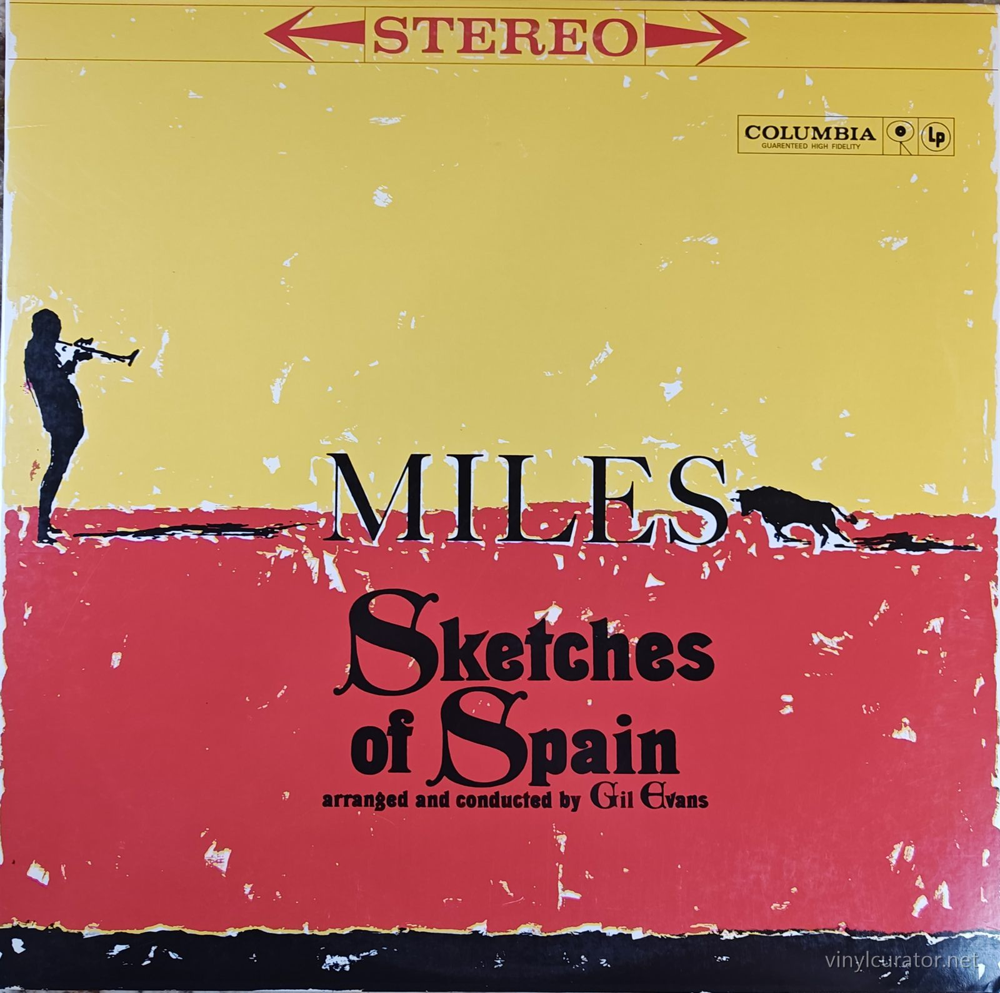
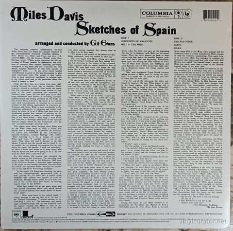
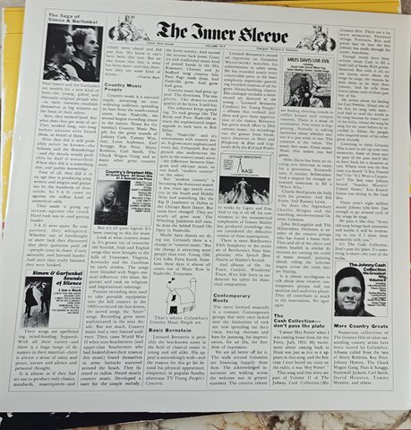
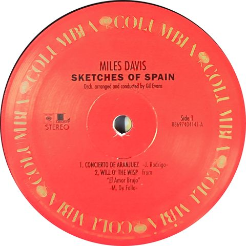
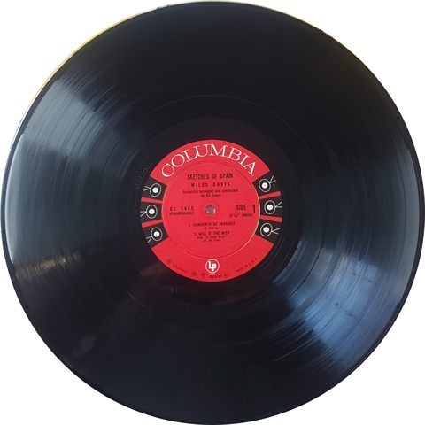
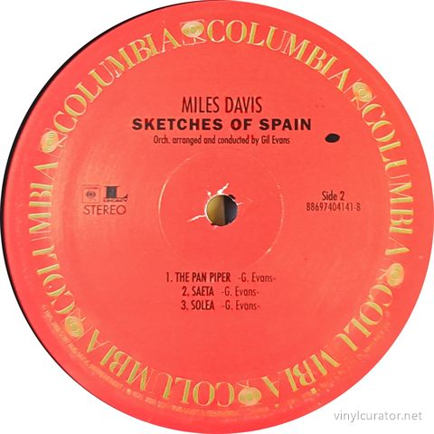
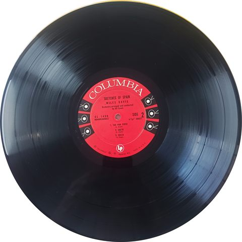
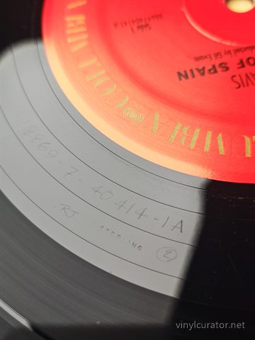
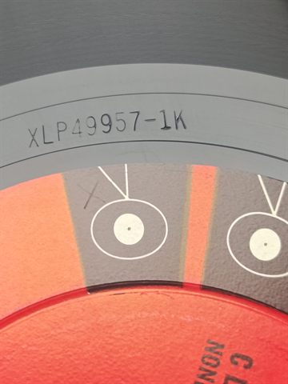

Thank you for buying this record. What follows is its documentation: the
pressing identified, the matrix / runout transcribed by hand from the dead
wax, and the condition as assessed before it was listed. It is yours to keep
with the record.
— Paul, Vinyl Curator
Miles Davis
Sketches of Spain
2010 · Columbia / Legacy 88697 40414 1 · Stereo · US · LP, 180 gram · 33 1/3 RPM









Pressing details
Label
Columbia / Legacy
Catalogue number
88697 40414 1
Year
2010
Mono / Stereo
Stereo
Country
US
Format
LP, 180 gram
Speed
33 1/3 RPM
Genre
Jazz - Third Stream / Orchestral Jazz
Producer
Teo Macero
Composer
Joaquín Rodrigo, Manuel de Falla, Gil Evans
Conductor
Gil Evans
Performer / Orchestra
Gil Evans Orchestra
Musicians
Miles Davis (trumpet, flugelhorn), Gil Evans (arranger, conductor), Bernie Glow, Ernie Royal, Louis Mucci, Taft Jordan, Johnny Carisi (trumpets), Frank Rehak, Jimmy Cleveland, Joe Bennett, Dick Hixon (trombones), Tony Miranda, Jim Buffington, Earl Chapin (French horns), Bill Barber (tuba), Romeo Penque (flute, oboe), Danny Bank (bass clarinet), Jack Knitzer (bassoon), Janet Putnam (harp), Jose Mangual (percussion), Elvin Jones (percussion), Paul Chambers (bass), Jimmy Cobb (drums)
Side A: 8869-7-40414-1A RJ STERLING
Side B: 8869-7-40414-1B RJ STIRLING
Condition
Cover
NM
Vinyl
NM
Variant chronology
1960 - US Columbia CS 8271 stereo / CL 1480 mono, six-eye "360 Sound" labels
1962-65 - US Columbia two-eye "360 Sound" labels
1970s - US Columbia red-label reissue (PC 8271)
2009 - Music On Vinyl MOVLP029 Europe 180g
2010 - US Legacy/Columbia 88697404141 HQ-180, RTI, Ray Janos Sterling cut <- this copy
2024 - Mobile Fidelity UD1S 180g, numbered box set
This Pressing
2010 US Legacy/Columbia 180g reissue - retro red Columbia label with Legacy logo; RTI HQ-180 pressing, Ray Janos "RJ STERLING" cut in deadwax.
The Album
Sketches of Spain was the third and final great orchestral collaboration between Miles Davis and arranger Gil Evans, following Miles Ahead (1957) and Porgy and Bess (1959). The seed was planted when Davis heard Joaquín Rodrigo's Concierto de Aranjuez and became obsessed with its adagio; Evans built the album around a sprawling orchestral reinvention of that movement, recorded across demanding sessions in November 1959 and March 1960 at Columbia's 30th Street Studio. Evans surrounded Davis's trumpet and flugelhorn with a unique ensemble - French horns, tuba, harp, bassoon, castanets and flamenco percussion - fusing Spanish folk and classical sources (Rodrigo, de Falla) with Evans originals like "Saeta," inspired by a Holy Week procession, and the closing "Solea." The sessions were famously tense and exacting, with Evans laboring over every detail, but the result is widely regarded as the purest realization of the Third Stream ideal of merging jazz improvisation with classical form. Davis considered it one of his own favorites, and it stands as a career peak for both men. The album won a Grammy Award, became one of the best-selling jazz LPs of its era, was inducted into the Grammy Hall of Fame, and is routinely cited among the greatest jazz recordings ever made.
Tracklist
Side 1
1. Concierto de Aranjuez (Adagio)
2. Will o' the Wisp (from "El Amor Brujo")
Side 2
1. The Pan Piper
2. Saeta
3. Solea
The Label
The red label with the repeated gold "COLUMBIA" rim text, small Legacy box logo, "STEREO" designation, and the 11-digit Sony catalog number (88697404141) is Sony Legacy's retro-styled Columbia design created for the 2009-2011 Miles Davis 180-gram vinyl reissue program - it is not a vintage Columbia label of any era. The barcoded back cover, Legacy logo, Sony Music Entertainment copyright lines, and the reproduced "The Inner Sleeve" newspaper-style Columbia promo insert confirm the modern US Legacy issue. Placement is therefore unambiguous: this copy sits in the modern reissue tier of the hierarchy, decades below the 1960 six-eye first pressings. The typed runouts (8869-7-40414-1A/1B with "RJ STERLING") confirm a Ray Janos cut at Sterling Sound, matching the RTI HQ-180 audiophile pressing of this series; the side B transcription "STIRLING" is presumably a typo for the same Sterling stamp.
Fidelity
Cut by Ray Janos at Sterling Sound ("RJ" in the deadwax) and pressed on HQ-180 vinyl at RTI for Sony's Legacy Miles Davis series; widely reported as sourced from the original analog masters. Forum and audiophile consensus rates it a quiet, dynamic, good-value modern cut, though the 30th Street recording's inherently dry, somewhat thin soundstage limits any pressing. In the fidelity hierarchy it sits clearly below the 2024 Mobile Fidelity UD1S (the current reference, praised for soundstage coherence and dynamics) and below clean 1960 six-eye originals, but comfortably above the Music On Vinyl European cut of the same era and all budget reissues.
Notes
2010 US Legacy/Columbia reissue of Sketches of Spain (88697 40414 1), stereo, 180 gram. Decisive evidence: retro red Columbia labels bearing the modern Legacy box logo and 11-digit Sony catalog number, a barcoded back cover with Legacy/Sony copyright lines, and the reproduced "The Inner Sleeve" newspaper insert - none of which exist on any vintage Columbia pressing. The typed dead-wax transcription "RJ STERLING" (Ray Janos, Sterling Sound) matches the RTI-pressed HQ-180 edition of Sony's Miles Davis vinyl reissue series. Not an original pressing; the 1960 originals carry six-eye "360 Sound" labels and CL 1480 / CS 8271 catalog numbers.
Documenting collections
I do this work for other people’s collections too — documenting a
collection record by record, researching individual pressings, and preparing
collections for sale or for insurance. If you have a collection you would like
documented, or a record you want identified properly, get in touch:
email
This record’s page: https://vinylcurator.net/albums/miles-davis-sketches-of-spain/